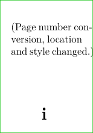
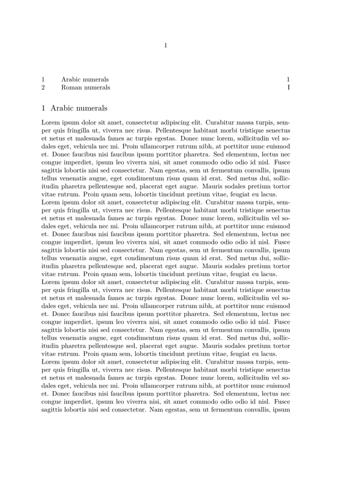

Contents
Summary
The command \setupuserpagenumber is used to change the page number conversion and construction.
Settings
| \setupuserpagenumber[...=...,...] | |
| viewerprefix | text |
| state | start stop none keep empty |
| ...=...,... | inherits from \setupcounter |
Description
Examples
Example 1
-
\setuppapersize[A10] \setuppagenumbering[location={footer,middle},style=\bfc] \setupuserpagenumber[numberconversion=romannumerals] \showframe[edge] \starttext (Page number conversion, location and style changed.) \stoptext
- 
Change page numbering to roman numerals mid-document
-
\usemodule[ipsum] \defineconversionset[roman][][Romannumerals] \starttext \placecontent % to check that page numbers are correct in the table of content \section{Arabic numerals} \dorecurse{6}{\ipsum \par} \pagebreak \section{Roman numerals} \resetuserpagenumber \setupuserpagenumber[numberconversionset=roman] \dorecurse{6}{\ipsum \par} \stoptext
- 